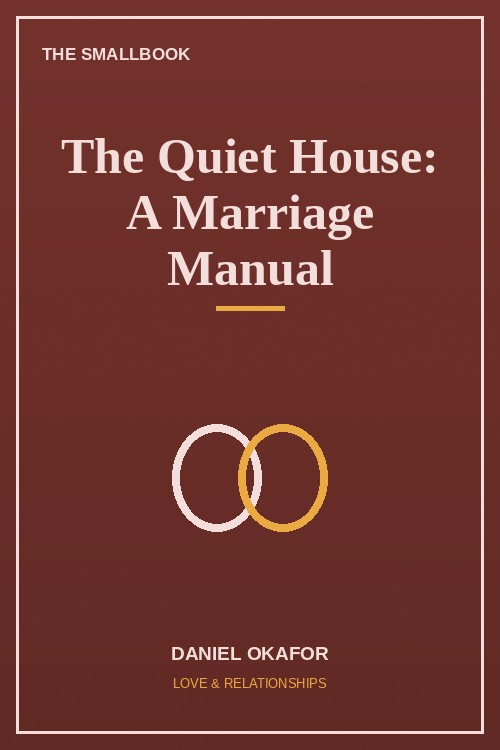

Library › Authors › Daniel Okafor
Books by Daniel Okafor
Daniel Okafor has one book in the library. Every book here is read down to the big idea, the lessons, the lines worth keeping and the actions worth taking. Start with the summary, then buy the full book if it earns a place on your shelf.

The Quiet House: A Marriage Manual
2021 · 8 min · 8 lessons
Daniel Okafor, a family therapist in Nigeria, noticed that couples rarely divorce over the shouting. They divorce over the quiet that follows it: the months of polite, frozen silence in which the marriage actually ends.
Daniel Okafor draws on twenty years of family therapy to argue that a marriage's vital sign is not passion or even communication volume, but repair. Loud homes that argue and reconcile are healthier than quiet houses where silence has become the system. The book teaches couples to read their own acoustics, distinguish restorative quiet from punishing quiet, and rebuild a home where things can be said at speaking volume again.
Lessons in the summary
- Two Kinds of Quiet
- The Sentence You Believe Is Unsafe
- Speaking Volume: The Repair Rituals
- The In-Law Frequency
- Children Are Acoustic Instruments
- The Ten Minute Exchange, Specified Exactly
- When Quiet Is the Symptom of Something Else
- Keeping the House at Speaking Volume for Decades
Lines worth keeping
- A quiet house can be a peaceful one or a frozen one. From the street they look identical.
- Couples do not run out of love. They run out of sentences they believe are safe to say.
- Volume is not the problem. Unrepaired volume is.
Questions Daniel Okafor helps answer
Read nearby authors next
- Brené Brown 3 books
- Esther Perel 2 books
- Alain de Botton 1 book
- Clara Whitfield 1 book
- Erich Fromm 1 book
- Gary Chapman and Jennifer Thomas 1 book
- Ines Duarte 1 book
- John Gottman and Julie Gottman 1 book